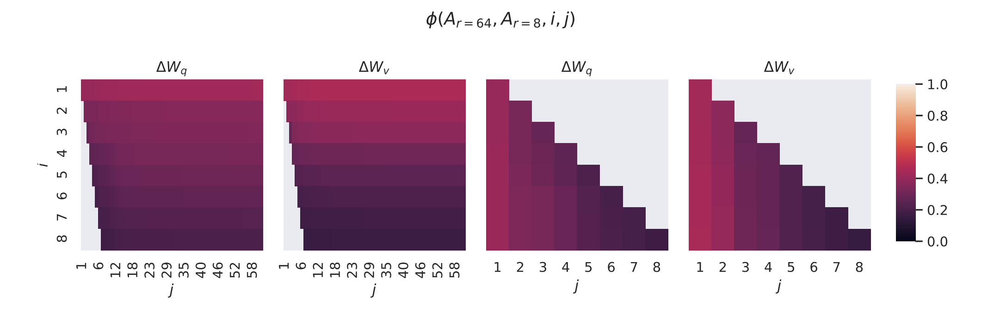
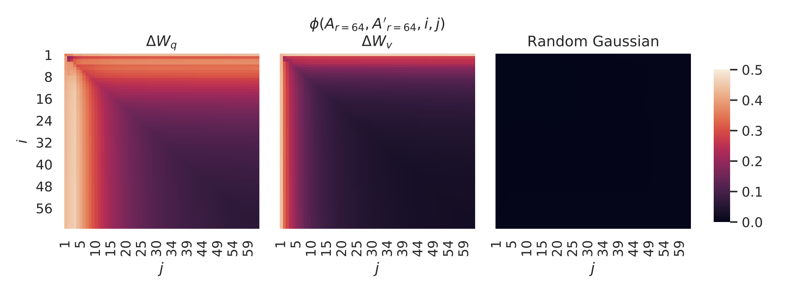

Analysis
The paper titled "LoRA: Low-Rank Adaptation of Large Language Models" presents an innovative approach to fine-tuning large pre-trained language models for specific tasks. The primary focus of this paper is to address the challenge of adapting these massive models, such as GPT-3, which are often prohibitively expensive to fine-tune and deploy due to their size and the number of parameters.
LoRA represents a significant advancement in the democratization of Large Language Models (LLMs) and similar expansive models. This approach effectively bridges the gap for individuals and organizations with limited budgets and computing resources, enabling them to fine-tune state-of-the-art large models. Previously, such an endeavor was predominantly feasible for major corporations equipped with substantial financial and computational capabilities. LoRA, therefore, marks a pivotal shift, making advanced AI technologies more accessible and leveling the playing field in the realm of AI research and application.
Methodology
Neural networks are composed of numerous dense layers that execute matrix multiplication tasks. Typically, these layers' weight matrices are of full rank. According to Aghajanyan et al. (2020), pre-trained language models, although they possess a low "intrinsic dimension," are still capable of efficient learning, even when subjected to a random projection into a smaller subspace. This insight led to the proposal that weight updates during adaptation also exhibit a low "intrinsic rank." To update a pre-trained weight matrix \(W_0\) in \(R^{d \times k}\), we apply a low-rank decomposition: \[ W_0 + \Delta W = W_0 + BA, \] where \(B \in R^{d \times r}\), \(A \in R^{r \times k}\), and the rank \(r << \min(d, k)\). Throughout training, \(W_0\) remains static without receiving gradient updates, whereas \(A\) and \(B\) are adjustable parameters. Both \(W_0\) and \(\Delta W = BA\) are multiplied by the same input, and their output vectors are aggregated on a coordinate-wise basis. Therefore, for \(h = W_0x\), our adjusted forward pass formula becomes: \[ h = W_0x + \Delta Wx = W_0x + BAx. \] This reparameterization is depicted in the below figure. For initialization, \(A\) is set to a random Gaussian distribution, and \(B\) is set to zero, resulting in \(\Delta W = BA\) being zero at the start of training.

The training objective for full fine tuning is: \[ \max_{\Phi} \sum_{(x,y) \in Z} \sum_{t = 1}^{|y|} log(P_{\Phi}(y_{t}|x,y_{< t})) \]
which now becomes: \[ \max_{\Theta} \sum_{x,y \in Z} \sum_{t = 1}^{|y|} log(p_{\Phi_{0}}+\Delta \Phi_{(\Theta)}(y_{t}|x,y_{< t})) \]
Why LoRA?
-
Challenges of Fine-Tuning: Large-scale pre-trained language models, such as GPT-3, present challenges in deployment due to the extensive parameters involved in fine-tuning, making it computationally and storage-intensive.
-
Drawbacks of Traditional Methods: Conventional approaches involving external modules for new tasks often introduce latency and compromise between efficiency and model quality, highlighting the need for more efficient adaptation strategies.
-
Inspiration from Intrinsic Dimension: Taking inspiration from studies showing that over-parametrized models have a low intrinsic dimension, the proposed Low-Rank Adaptation (LoRA) approach leverages this concept to reduce the number of parameters needed during model adaptation.
-
LoRA Efficiency: By optimizing rank decomposition matrices of dense layers' weight changes while keeping pre-trained weights frozen, LoRA achieves storage and compute efficiency. Even with models as large as GPT-3, a very low rank proves sufficient, making LoRA a practical and effective solution for efficient model adaptation.
Why Does It Succeed?
Empirical research within the paper delves into the comparison of top singular values between adaptive matrices of different ranks (denoted as i and j, where i << j). The findings of these studies reveal a substantial overlap in the top singular values of both matrices. This discovery implies that a matrix with a much lower rank already encapsulates most of the information present in a larger rank matrix. As a result, the rank decomposition in LoRA can be achieved without a significant sacrifice in performance.
Here is the formula for calculating the normalized subspace similarity:
\(\phi (A_{r=8}, A_{r=64}, i, j) = \frac{||U_{A_{r=8}}^{iT} U_{A_{r=64}}^{jT}||_{F}^{2}}{min(i,j)} \in [0,1]\)
The figure above illustrates the subspace similarity between the column vectors of \(A_{r=8}\) and \(A_{r=64}\) for both \(\Delta W_{q}\) and \(\Delta W_{v}\). The third and fourth figures provide a closer look at the lower-left triangle in the first two figures. Notably, the top directions of r=8 are encompassed within r=64, and vice versa.
It is important to note that the directions corresponding to the top singular vectors exhibit significant overlap between \(A_{r=8}\) and \(A_{r=64}\), while other directions do not. This observation suggests that the most crucial information is contained in the top singular values of a low-rank matrix, allowing for effective low-rank decomposition. In contrast, other directions contain random noise that accumulates during training.
The figure above further substantiates this finding by plotting the normalized subspace similarity between two randomly seeded runs with r=64. The first and second figures depict the normalized subspace similarity between the column vectors of \(A_{r=64}\) from two random seeds for both \(\Delta W_{q}\) and \(\Delta W_{v}\) in the 48-th layer. The third figure represents the same heatmap between the column vectors of two random Gaussian matrices.
Results

The above graphs demostrate the exceptional performance of LoRA despite having very few parameters in comparison to full fine-tuning. Moreover, LoRA's performance is consistent and doesn't fluctuate on increasing parameters. As rank becomes much higher, it's accuracy converges to that of the full fine-tuned model.

In the above table, we see that LoRA performs slightly better than fully fine-tuned GPT-3 model despite having only about 5 million parameters.

It is astounding that LoRA provides state-of-the-art performance even with a rank of 2!

The above table shows the metrics by varying the rank and expanding the scope of LoRA to different matrices in the attention modules of transformer.
Literature Review
There have been many works on performing fine-tuning of Large Language Models for specific downstream tasks in a parameter efficient manner in order to reduce the storage and computational costs. The paper discusses the below competitive approaches:
Fine-Tuning (FT) is a common approach for adaptation. During fine-tuning, the model is initialized to the pre-trained weights and biases, and all model parameters undergo gradient updates. A simple variant is to update only some layers while freezing others (e.g. updating just the last two layers (FTTop2)).
Bias-only or BitFit is a baseline where we only train the bias vectors while freezing everything else.
Prefix-embedding tuning (PreEmbed) inserts special tokens among the input tokens. These special tokens have trainable word embeddings and are generally not in the model's vocabulary. Where to place such tokens can have an impact on performance. We focus on "prefixing", which prepends such tokens to the prompt, and "infixing", which appends to the prompt.
Prefix-layer tuning (PreLayer) is an extension to prefix-embedding tuning. Instead of just learning the word embeddings (or equivalently, the activations after the embedding layer) for some special tokens, we learn the activations after every Transformer layer. The activations computed from pre vious layers are simply replaced by trainable ones.
Adapter tuning inserts adapter layers between the self attention module (and the MLP module) and the subsequent residual connection. There are two fully connected layers with biases in an adapter layer with a nonlinearity in between.
Biography

|
Edward J. HuEdward J. Hu is a PhD student advised by Yoshua Bengio at University of Montreal. He was a researcher at Microsoft before he was a graduate student where he was working on large scale deployment of GPT-3 and theories of infinetely wide networks. He was an AI resident at Microsoft Research Redmond. He has 2551 citations with a h-index of 12. |

|
Yelong ShenYelong Shen is a Researcher at Microsoft Redmond. Prior to this he was also a researcher at Tencent and a Research Software Engineer at Microsoft Redmond. He graduated with a PhD Degree in Computer Science from Kent State University. He has over 7000 citations and a h-index of 35 |

|
Phillip WallisPhillip Wallis is a Senior Applied Scientist at AWS Security AI Research. Before this he was a Senior Applied Scientist at Azure AI - Microsoft, where he worked on LoRA. He graduated with a PhD Degree in Computer Science-Machine Learning from Oregon Health and Science University, where his research was primarily focused on Computer Vision and Healthcare AI. He has 1523 citations and a h-index of 4. |

|
Zeyuan Allen-ZhuZeyuan Allen Zhu is a CoreML member at Meta FAIR labs. Before this he was a Researcher at Microsoft Research Redmond, where he co-authored LoRA. He graduated with a PhD degree in Computer Science from Princeton, where he worked on machine learning and optimization theory. He has graduated with a Master's Degree in Computer Science from MIT where he was advised by Silvio Micali. He has 11204 citations and a h-index of 44. |

|
Yuanzhi LiYuanzhi Li is a assistant professor in Machine Learning Department at CMU. He was a postdoc at Stanford and graduated with a PhD degree in Computer Science from Princeton. His bachelors was in Computer Science and Mathematics from Tsinghua University. He has over 12000 citations and has a h-index of 44 |

|
Shean WangShean Wang is a Principal Software Development Engineer at Microsoft. Before that he was a Senior Software developer at Microsoft. He graduated with a Master's degree in Computer Science from Beihang University |

|
Lu WangLu Wang, Associate Professor at the University of Michigan, was previously with Northeastern University until 2020. She earned her Ph.D. in Computer Science from Cornell University, supervised by Professor Claire Cardie. Lu specializes in natural language processing, computational social science, and machine learning, focusing on text summarization, language generation, and applications such as media bias analysis. Her work received awards, including a CHI 2023 best paper honorable mention. Lu's research is funded by NSF, AFOSR, IARPA, and industry partnerships. As ACL equity director, she co-founded SIGSUMM and holds over 2500 citations with an h-index of 29 |

|
Weizhu ChenWeizhu Chen is Vice President of Science at Azure AI, Microsoft. He is also an author of RAdam and Deberta. He recieved his PhD in Computer Science from Hong Kong University of Science and Technology. He has over 13000 citations with a h-index of 46. |
Social Impact
Fine-tuning enormous language models is prohibitively expensive in terms of the hardware required and the storage/switching cost for hosting independent instances for different tasks. LoRA is an efficient adaptation strategy that neither introduces inference latency nor reduces input sequence length while retaining high model quality. Importantly, it allows for quick task-switching when deployed as a service by sharing the vast majority of the model parameters (W matrices) and only changing the A and B matrices for the task at hand. While it is demonstrated on Transformer language models, the proposed principles could be generally applicable to any neural networks with dense layers. The following points elaborate its social impact:
- Resource Efficiency: LoRA's ability to significantly reduce the number of parameters needed for model adaptation implies a potential reduction in computational and storage requirements. This could democratize access to advanced natural language processing capabilities, allowing a broader range of individuals, organizations, and applications to benefit from these technologies without extensive infrastructure.
- Energy Consumption: The more efficient use of computational resources can contribute to a decrease in overall energy consumption associated with training and deploying large language models. This aligns with growing concerns about the environmental impact of AI technologies and supports sustainable practices in the development of advanced language models.
Industry Applications
-
Faster Deployment
Problem: Traditional fine-tuning of large models can be time-consuming, hindering quick deployment in real-world applications.
Solution: Parameter-efficient approaches allow for quicker training times, facilitating faster model deployment. This is especially crucial in industries where rapid adaptation to new data or changing requirements is essential.
-
Scalability
Problem: As models grow in size, scalability becomes a significant concern in terms of both infrastructure and costs.
Solution: Parameter-efficient fine-tuning methods enable the scaling of models without a linear increase in resources. This scalability is crucial for industries dealing with expanding datasets and evolving language patterns.
-
Memory and Inference Efficiency
Problem: Problem: Deploying large models for inference on resource-constrained devices can be challenging due to memory constraints.
Solution: Solution: Parameter-efficient fine-tuning approaches can lead to models with smaller memory footprints, making them more suitable for deployment on a wider range of devices, including edge devices and mobile platforms.
Follow-on Research
There are many directions for future works such as:
- LoRA can be combined with other efficient adaptation methods like prefix tuning, potentially providing orthogonal improvement.
- The mechanism behind fine-tuning or LoRA is far from clear – how are features learned during pre-training transformed to do well on downstream tasks? We believe that LoRA makes it more tractable to answer this than full fine-tuning.
- We mostly depend on heuristics to select the weight matrices to apply LoRA to. Are there more principled ways to do it?
- Finally, the rank-deficiency of W suggests that W could be rank-deficient as well, which can also be a source of inspiration for future works.
There have been papers which have followed on with the ideas of low rank adaptation matrices presented in this paper. Some of the notable ones are:
-
QLoRA: Efficient Finetuning of Quantized LLMs
The paper "QLoRA: Efficient Finetuning of Quantized LLMs" introduces QLoRA, a method for efficiently fine-tuning large language models (LLMs) like a 65B parameter model on a single 48GB GPU. It preserves full 16-bit fine-tuning task performance while significantly reducing memory usage. QLoRA involves backpropagating gradients through a 4-bit quantized pretrained language model into Low Rank Adapters (LoRA). The paper presents several innovations, including 4-bit NormalFloat (NF4), Double Quantization, and Paged Optimizers, to save memory without sacrificing performance. It also provides detailed analyses of instruction following and chatbot performance across various datasets and model types. The paper's contributions highlight advancements in memory-efficient model fine-tuning and practical implications for AI research and applications. For more detailed information, you can access the full paper here.
-
QALoRA: Quantization-Aware Low-Rank Adaptation of Language Models
The paper titled "QALoRA: Quantization-Aware Low-Rank Adaptation of Language Models" presents QALoRA, a method for efficient and data-free fine-tuning of low-bit diffusion models. This approach merges model weights with a quantization-aware variant of low-rank adapters (LoRA) for joint low bit-width quantization. QALoRA distills the denoising capabilities of the full-precision model into its quantized counterpart without needing training data. It introduces scale-aware optimization and temporal learned step-size quantization, significantly enhancing performance. For more details, you can access the full paper here.
-
GLoRA: Generalized Low-Rank Adaptation of Large Language Models
The paper titled "GLoRA: Generalized Low-Rank Adaptation of Large Language Models" introduces GLoRA, a method that enhances the Low-Rank Adaptation (LoRA) technique for fine-tuning large language models. GLoRA optimizes pre-trained model weights and activations with a generalized prompt module, focusing on efficient parameter adaptation. It showcases proficiency in transfer learning, few-shot learning, and domain generalization, surpassing previous methods across various datasets. GLoRA stands out for its fewer parameters and no extra inference cost, making it an effective solution for resource-constrained applications. For detailed insights, you can read the full paper here.
Peer-Review
Strong Accept
Paper Summary:The paper introduces Low-Rank Adaptation (LoRA), a novel approach to adapt large pre-trained language models (LLMs) for specific tasks. LoRA strategically updates only a small fraction of the parameters, freezing the model's pretrained parameters, reducing the computational burden typically associated with fine-tuning such large models. The method involves injecting trainable rank decomposition matrices into the model's layers, thereby maintaining the pre-trained weights while enabling efficient adaptation.
Strengths:- Innovative Approach: LoRA's strategy of using low-rank matrices for model adaptation is a significant departure from traditional full-model fine-tuning approaches. This innovation addresses a critical need in the field of NLP for more computationally efficient methods of adapting LLMs.
- Empirical Validation: The authors provide a comprehensive set of experiments demonstrating LoRA's efficacy. These experiments, conducted on models like GPT-3, show that LoRA can achieve comparable or superior performance to full fine-tuning while requiring significantly fewer trainable parameters.
- Practical Relevance: The method has high practical significance, especially for organizations with limited computational resources. It democratizes access to state-of-the-art LLMs by making their adaptation more accessible and less resource-intensive.
- Clear Presentation: The paper is well-organized and clearly written, making complex concepts accessible to readers. The authors do an excellent job of explaining the motivation, theory, and practical implications of their work.
- Generalizability Concerns: While the paper presents results on a range of NLP tasks, there is limited discussion/experiments on the generalizability of LoRA to other domains or model architectures beyond language models.
- Theoretical Depth: The paper could benefit from a more in-depth theoretical analysis of why low-rank adaptations are effective for these models. A deeper exploration of the theoretical underpinnings would strengthen the paper's contributions.
"LoRA: Low-Rank Adaptation of Large Language Models" is a highly valuable contribution to the field of AI. It addresses a pertinent challenge in the adaptation of LLMs with a novel, efficient, and effective method. The paper is well-written and thoroughly researched, offering both practical utility and a foundation for future research. While there are areas for further exploration, particularly in theoretical understanding and broader comparisons, the strengths of the paper significantly outweigh its limitations.
References
[2] Neil Houlsby, Andrei Giurgiu, Stanislaw Jastrzebski, Bruna Morrone, Quentin de Laroussilhe, Andrea Gesmundo, Mona Attariyan, and Sylvain Gelly. Parameter-Efficient Transfer Learning for NLP. arXiv:1902.00751 [cs, stat], June 2019. 00751.
[3] Xiang Lisa Li and Percy Liang. Prefix-Tuning: Optimizing Continuous Prompts for Generation. arXiv:2101.00190 [cs], January 2021.
[4] Armen Aghajanyan, Luke Zettlemoyer, and Sonal Gupta. Intrinsic Dimensionality Explains the Effectiveness of Language Model Fine-Tuning. arXiv:2012.13255 [cs], December 2020.
[5] Ashish Vaswani, Noam Shazeer, Niki Parmar, Jakob Uszkoreit, Llion Jones, Aidan N Gomez, Łukasz Kaiser, and Illia Polosukhin. Attention is all you need. In Proceedings of the 31st In ternational Conference on Neural Information Processing Systems, pp. 6000–6010, 2017.
Team Members:
Tarun Reddy Thandu, Bhavya Pranav Tandra